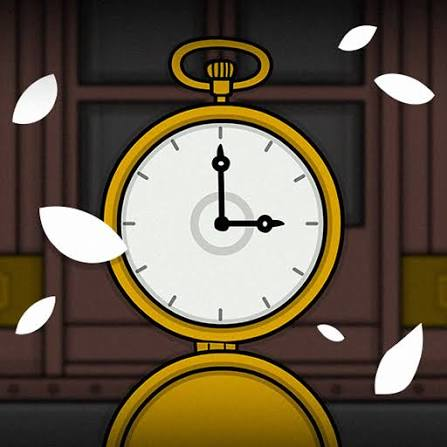

“Travel through the life and memories of Laura Vanderboom.”
Underground Blossom é uma aventura point-and-click da Rusty Lake lançada em 27 de setembro de 2023. O jogo acompanha Laura Vanderboom em uma viagem pelo metrô subterrâneo de Rusty Lake, onde cada estação representa uma parte diferente de sua vida, suas memórias e possíveis futuros. A aventura combina puzzles, exploração e narrativa surrealista enquanto o jogador viaja de estação em estação. Ao longo do percurso, é possível encontrar acontecimentos importantes da vida de Laura e ajudá-la a compreender sua própria história e escapar da corrupção de sua mente.
Laura Vanderboom embarca em uma viagem pelo misterioso metrô de Rusty Lake, passando por diferentes estações que representam momentos importantes de sua vida. Cada parada funciona como uma lembrança, levando o jogador por diferentes fases de sua infância, juventude e vida adulta enquanto acontecimentos do passado começam a se conectar. Conforme Laura avança pela linha subterrânea, suas memórias revelam acontecimentos familiares e segredos que ajudam a compreender melhor seu destino. O jogador precisa solucionar os enigmas de cada estação e ajudá-la a compreender sua própria vida enquanto tenta escapar da corrupção que tomou conta de sua mente.